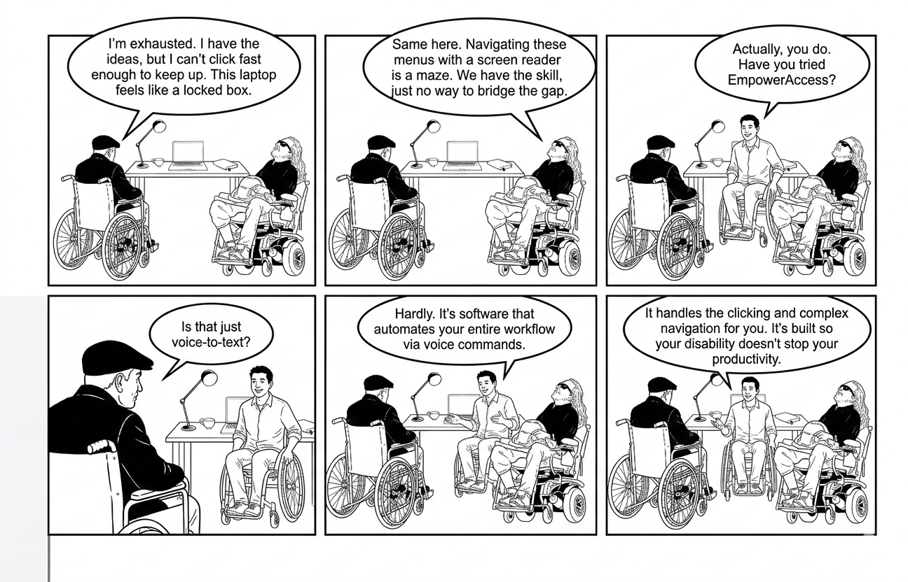

Breaking down physical and digital barriers through both intelligent text and voice interaction, real-time assistance, and cutting-edge AI — so everyone navigates the systems independently.
We believe that everyone deserves equal access to digital technology. EmpowerAccess is dedicated to breaking down barriers through intelligent voice interaction, real-time assistance, and cutting-edge AI technology. Our platform empowers individuals with disabilities to navigate the digital world independently and confidently.
With years of expertise in accessibility solutions, we've developed a comprehensive platform that combines voice recognition, emergency services, real-time information, and task management into one seamless experience. Our commitment to innovation and user-centric design ensures that accessibility doesn't mean compromise on features or performance.
Create your account in seconds with our simple registration process.
Set up your preferences and integrate your external services.
Use voice commands to access all features seamlessly.
Enjoy a fully accessible digital experience powered by AI.
1. Accessibility ensures equal opportunities for people of all abilities.
2. Many digital platforms remain difficult to navigate for users with disabilities.
3. AI can bridge gaps by offering personalized support and adaptive tools.
4. Inclusive design improves usability for everyone, not just those with impairments.
5. Accessibility fosters independence and dignity for individuals with diverse needs.
6. It reduces barriers in education, employment, and everyday digital interactions.
Ultimately, accessibility is about fairness, inclusion, and empowering every user.

comic.pngSmart speech recognition and text-to-speech interaction for seamless accessibility.
Real-time weather information using integrated external APIs.
Stay informed with latest news headlines and live stock market data.
Instant emergency alert system designed for quick response situations.
Intelligent recommendations and automated task optimization powered by machine learning.
Intelligent task scheduling with recurring reminders, priorities, and AI-suggested optimization.
Comprehensive admin dashboard for user management, roles, permissions, and system configuration.
Cloud-ready architecture supporting unlimited users with load balancing and distributed processing.
"review."
— Author
"review."
— Author
"review."
— Author